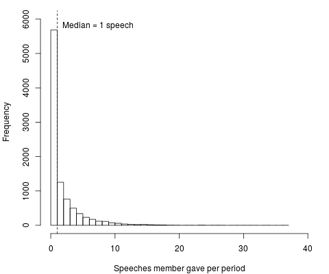
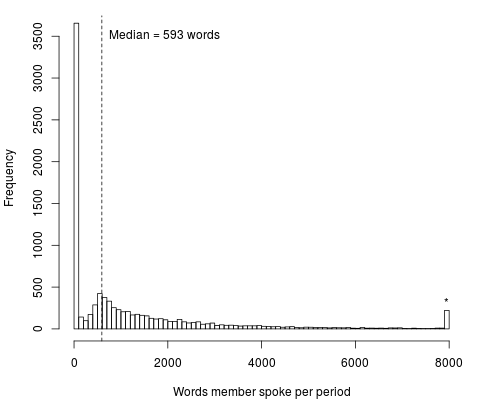
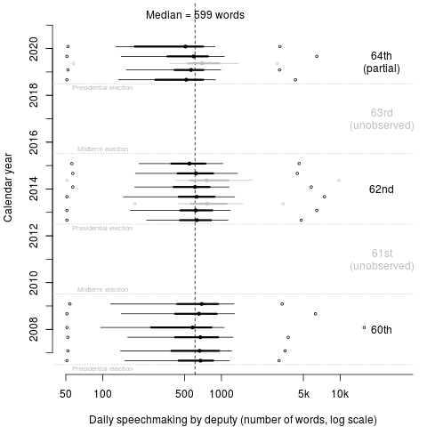

Tuve que sacar de un borrador unos gráficos que resumen el uso de la tribuna de la Cámara de Diputados. Los recupero aquí. Adoptan una perspectiva cuantitativa del debate plenario: reportan el número y extensión de las intervenciones de los diputados federales. Dejan de lado la parte cualitativa—de qué hablaron los oradores—pero permiten subrayar tendencias interesantes.
Los datos provienen de las versiones estenográficas. Contrastan los dos primeros años de la cámara actual (la LXIV Legislatura de 2018 hasta la fecha 2020) y dos anteriores (la LX 2006–2009 y la LXII 2012–2015). Las tres son cámaras previas a la elección federal intermedia de su sexenio, lo que debería abonar en pro de su comparabilidad.
Figura 1: Número de oradores en la sesión
La figura 1 presenta el número de diputados que tomaron la palabra en cada una de las sesiones. El día mediano contribuyeron al debate 36.5 oradores diferentes, y la distribución es claramente acampanada. Hubo seis días con más de 100 oradores. Se trata de sesiones con onomásticos próximos, extraordinarias o de presupuesto.
|  | ]] |
El par de diagramas en la tabla 1 resumen la actividad individual en los periodos observados, una el número de discursos, otra el número de palabras pronunciadas. Consideré arbitrariamente que todo aquel que dijo menos de 50 palabras en todo un día no contribuyó al debate, y lo eliminé de los conteos. La moda de la distribución de discursos se ubica en un rotundo cero: más de 3,500 diputados (38% de las observaciones) nunca abrieron el pico en el periodo. El diputado mediano dio un solo discurso en cada periodo de sesiones. Esto me recuerda al patrón de mis alumnos en clase: un puñado participa activamente, la mayoría restante escucha en silencio.1 La marca al mayor número de discursos se la llevó el Diputado Ricardo Mejía Berdeja de MC en la LXII Legislatura.
En lo que respecta a la extensión de las intervenciones, la métrica es el número de palabras acumuladas por orador en el periodo. En este caso la distribución es bimodal: un pico alto en cero; otro más bajo alrededor de la mediana de 593 palabras por periodo de sesiones. La columna que aparece en el extremo derecho, bajo un asterisco, es cumulativa—reporta, juntas, 217 observaciones con ocho mil o más palabras en el periodo (2.2 por ciento, distribuidas con mayor rareza de 8,000 a 50,291 palabras).

Figura 2: Extensión diaria de los discursos en cada periodo de sesiones
La figura 2 representa los totales diarios en los periodos observados. Los puntos negros son la extensión mediana de los discursos diarios. Las medianas de los periodos son cercanas a la mediana global de 599 palabras, si bien las de la LX están levemente por arriba, las de la LXIV levemente por debajo. Las líneas horizontales reportan la dispersión de la parte central de la densidad, la más gruesa es el rango intercuartiles, la delgada conecta el primer decil y el noveno. En general las distribuciones son similares. Las excepciones más claras son los periodos extraordinarios, dibujados en color gris en vez de negro.
Los puntos huecos son mínimos y máximos de cada periodo. La Diputada Valentina Batres obtuvo la marca por haber pronunciado el discurso más extenso de entre los observados. Con 15,932 palabras, su intervención del 11 de marzo 2008 es 50 por ciento más larga que la siguiente en orden de importancia y contiene aproximadamente el mismo número de palabras que los siete primeros capítulos de Don Quijote de la Mancha (cuarenta y cinco páginas en la edición que tengo en casa). Batres y otros diputados cercanos a AMLO usaron tácticas dilatorias a lo largo de la sesión, atrasando la votación del Sistema Nacional de Información Estadística y Geográfica. Tomaron esta ley como rehén, en demandaba de que la Presidenta de la Cámara, la Diputada Ruth Zavaleta de su propio partido, modificara el orden del día para debatir e investigar unos contratos millonarios firmados por Juan Camilo Mouriño, Secretario de Gobernación.
El filibusterismo legislativo, amparado en los derechos que a las minorías otorga el Reglamento cameral, amerita un estudio sistemático. Promete ser interesante.
Actualización 2jul2020 La figura 2 ahora incluye el periodo extraordinario del 30 de junio 2020. Sesión sui generis. Los protocolos para prevenir el contagio del codid-19 regimentaron los discursos, con poca variación entre sí. Los diputados entraron al salón a votar en grupos de cincuenta.
El modelo de ágora de Atenas de Nadia Urbinati inspira muchas ideas asociadas a la pasividad en asambleas deliberativas.